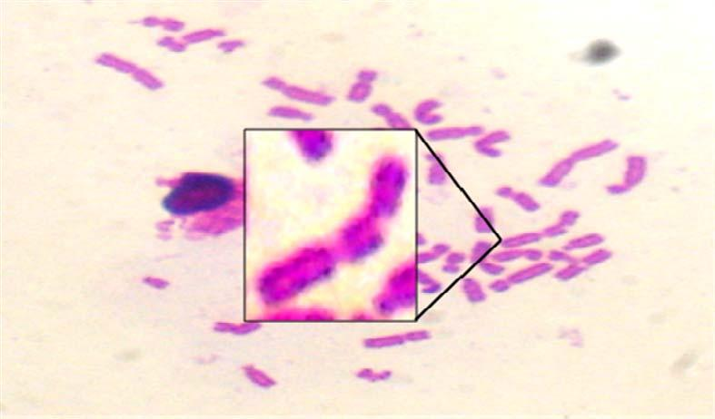

Genética y Mutagénesis Ambiental

GeMA - UNRC
www.reapueblosrurales.org.ar
Autor: Ignacio Origlia
Genotoxicidad
La toxicidad genética o genotoxicidad es el proceso por el cual un agente produce un efecto deletéreo sobre el ADN y otros blancos celulares que controlan la integridad del material genético.
Se denominan genotóxicos a aquellos agentes que producen alteraciones estructurales en el material hereditario, causando cambios o rearreglos en el mismo, e induciendo por tanto mutaciones.
La acumulación de estas mutaciones en las células de mamíferos tiene una comprobada relación con la aparición de procesos neoplásicos. Además, si estas mutaciones se producen durante el embarazo en las células del concepto en desarrollo, pueden llevar a la inducción de malformaciones o incluso abortos. Si las mutaciones se producen sobre óvulos o espermatozoides pueden llevar a alteraciones reproductivas como infertilidad o una mayor incidencia de enfermedades hereditarias.
Ensayos de corto plazo (ECP) para la detección de mutágenos y carcinógenos
Aberraciones cromosómicas (AC): Alteraciones producidas a nivel de los cromosomas, tanto en estructura (daño en cromosomas o cromátidas) como en número (aneuploidías).

Ensayos de corto plazo (ECP) para la detección de mutágenos y carcinógenos
Micronúcleos (MN): ensayo que tiene en cuenta factores como la absorción, distribución, metabolismo y excreción (cinética) del compuesto analizado y/o sus metabolitos y la posible reparación de las lesiones. Sirve para detectar daño a nivel de los cromosomas o del aparato mitótico.

Ensayos de corto plazo (ECP) para la detección de mutágenos y carcinógenos
Ensayo Cometa : ensayo que tiene en cuenta factores como la absorción, distribución, metabolismo y excreción (cinética) del compuesto analizado y/o sus metabolitos y la posible reparación de las lesiones. Sirve para detectar daño a nivel de los cromosomas o del aparato mitótico.
Cada uno de estos ensayos proporciona cierta información, que resulta concluyente cuando es analizada de forma integrada como parte de una batería de ensayos
Producción Científica o Aportes al conocimiento
2009
Genotoxicidad del glifosato evaluada mediante el ensayo cometa y pruebas citogenéticas
El propósito de este estudio fue proporcionar conocimiento para aclarar los datos contradictorios sobre los efectos genotóxicos in vitro e in vivo sobre el glifosato
Contexto político
Legilación Ambiental
Revisión y Armonización de la Legislación Ambiental de la Ciudad de Río Cuarto (Córdoba, Argentina).
Delia Aiassa ; Nancy Reartes y Alejandro Martí
Ciencia, Vol. 3, No 5, Julio 2008. Página 129
Revisión, clasificación y análisis de las ordenanzas y los decretos municipales aplicables a elementos naturales y problemas ambientales locales
conceptos
Objetivos
Definir temáticas ambientales generales,Identificar e interpretar la normativa ambiental local y Formular una propuesta de armonización de la Legislaciónde la ciudad de Río Cuarto
conclusiones
Modificar la redacción de los articulados y sugerir decretos reglamentarios, Fijar órganos de aplicación y órganos de contralor en los casos que lo requieran, Apartar lo referente a la creación de Comisiones Especificas y a temáticas no relacionadas con el ambiente físico, Proponer la derogación de las ordenanzas y decretos sin vigencia o no pertinente
contexto político
2009
AC aplicadores
introducción
materiales y metodos
resultados
conclusión
2019
Eval. Daño Genético
introducción
conclusiones